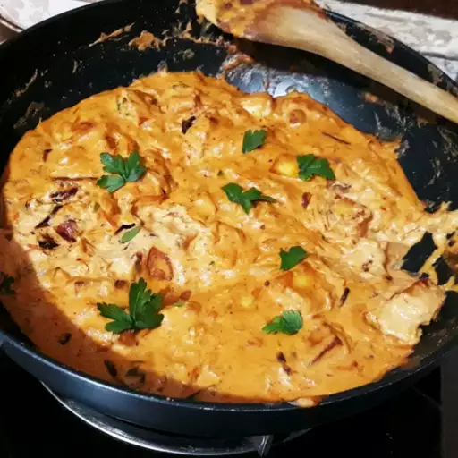

Paneer Recipe

Description
Butter paneer is a rich and creamy Indian dish made with paneer (Indian cottage cheese) cooked in a flavorful tomato-based gravy, enriched with butter and spices. It is a popular vegetarian option known for its indulgent taste and smooth texture.
Ingredients
- ½ cup vegetable oil
- ½ pound paneer, cut into 1/2-inch cubes
- 2 tablespoons butter
- 2 onions, finely chopped
- 1 tablespoon ginger paste
- 1 tablespoon garlic paste
- ½ cup cashews
- 1 teaspoon ground red chile pepper
- 1 teaspoon ground cumin
- 1 teaspoon ground coriander
- 1 teaspoon garam masala
- 1 (15 ounce) can tomato sauce
- 1 cup half-and-half
- 1 cup milk
- 1 teaspoon white sugar
- 1 teaspoon salt
Steps
- Heat oil in a large skillet over medium heat; fry paneer in batches until golden, about 5 minutes. Transfer fried paneer to a paper towel-lined plate to drain, retaining vegetable oil in skillet.
- Melt butter in the same skillet over medium heat; cook and stir onion until golden brown, about 10 minutes. Add ginger paste and garlic paste. Continue to cook until fragrant, about 1 minute more. Stir cashews, ground red chiles, cumin, coriander, and garam masala into the onion mixture. Cook and stir for 1 minute.
- Stir tomato sauce, half-and-half, milk, sugar, and salt into spice mixture; simmer until thickened, about 5 minutes. Reduce heat to low. Add fried paneer and simmer until heated through, about 5 minutes more.